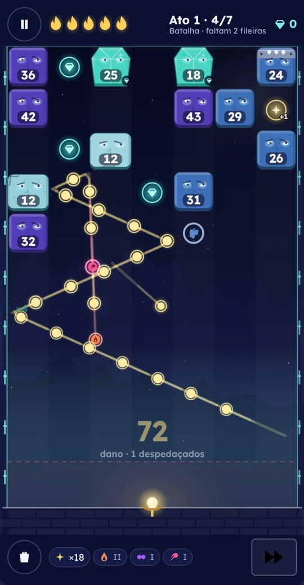
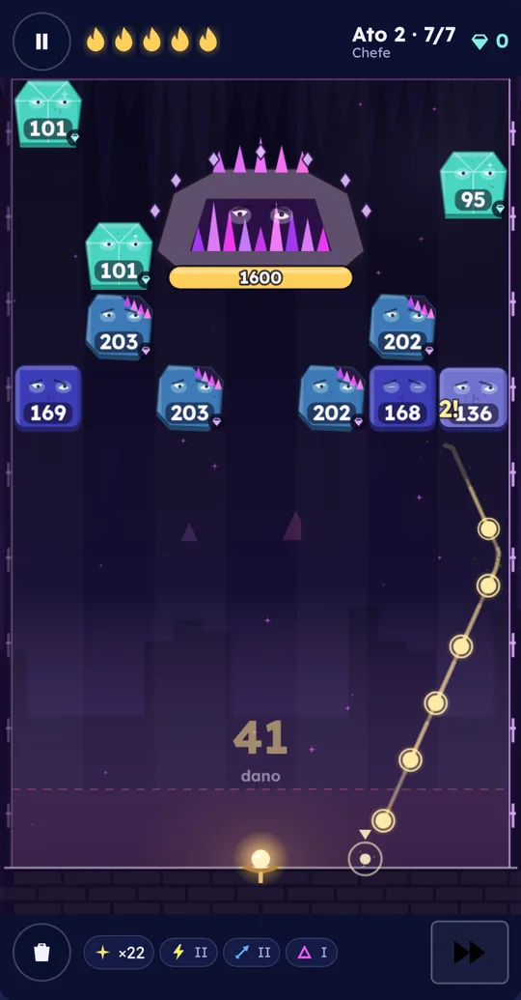
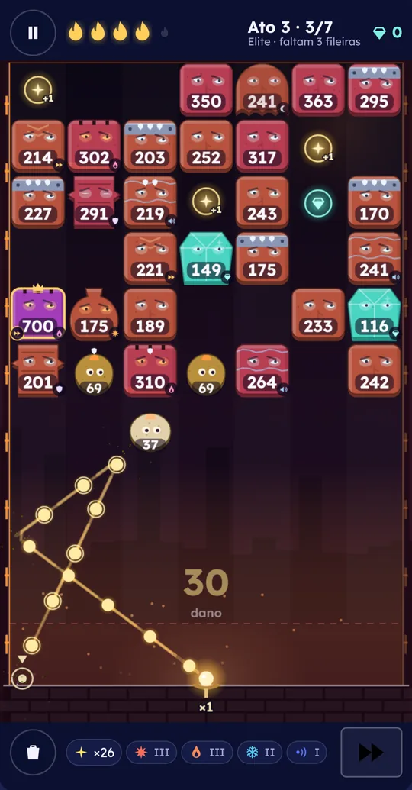
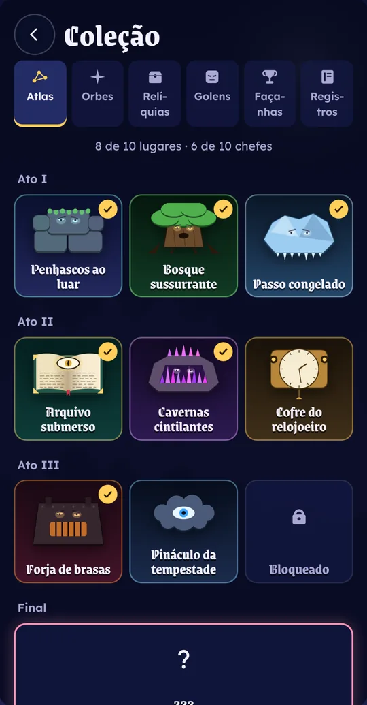
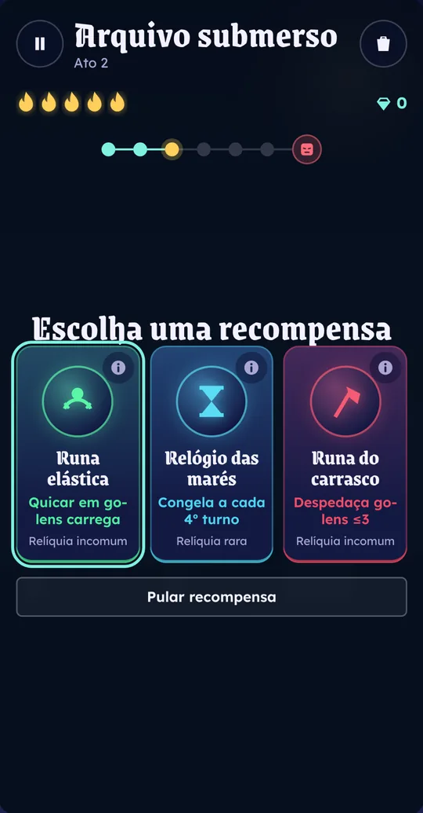

Caromancer
Cada quique deixa seu feitiço mais forte.
Um roguelite em turnos para jogar com um dedo. Arraste para mirar, solte e veja seus orbes ricochetearem por uma maré de golens de pedra rúnica.

Como funciona um turno
Mire
Arraste em qualquer lugar do tabuleiro. A linha de mira mostra onde caem os primeiros quiques.
Tabele
Cada quique numa parede ou no teto soma uma tabela: +50% de dano para aquele orbe.
Despedace
Os golens descem depois de cada rajada. Limpe o andar antes que cheguem à sua lanterna.
Dez lugares, dez chefes
Cada partida passa por três atos escolhidos entre dez lugares que se abrem quando você derrota seus guardiões. Cada um tem seus golens e seu chefe: uma Rainha Geodo cuja casca volta a crescer, um Relojoeiro que rebobina o dano, uma Estrela Oca que engole sua linha de mira.




Combinações que saem do controle
Escolha entre 14 orbes e 42 relíquias entre as lutas. Gêmeos que se dividem, Volts que encadeiam raios, Novas que explodem, Cometas que já saem carregados: combine tudo até uma única rajada causar milhares de dano.
Justo por natureza
- Sem energia, sem timers, sem caixas de recompensa.
- Anúncios só aparecem quando você escolhe um: para reacender uma partida ou dobrar sua luz estelar.
- Tudo que muda o jogo é conquistado jogando.
- Funciona totalmente offline. Sem conta.
Muito para voltar
Seis heróis, dez níveis de Eclipse, Fenda Diária, Desafio semanal, Maratona de chefes, seis Provas, modo Infinito, 39 façanhas, metas de maestria por herói, códigos de semente para compartilhar e 13 estilos de orbe. Em English, Español, Português, Français, Deutsch e 日本語.